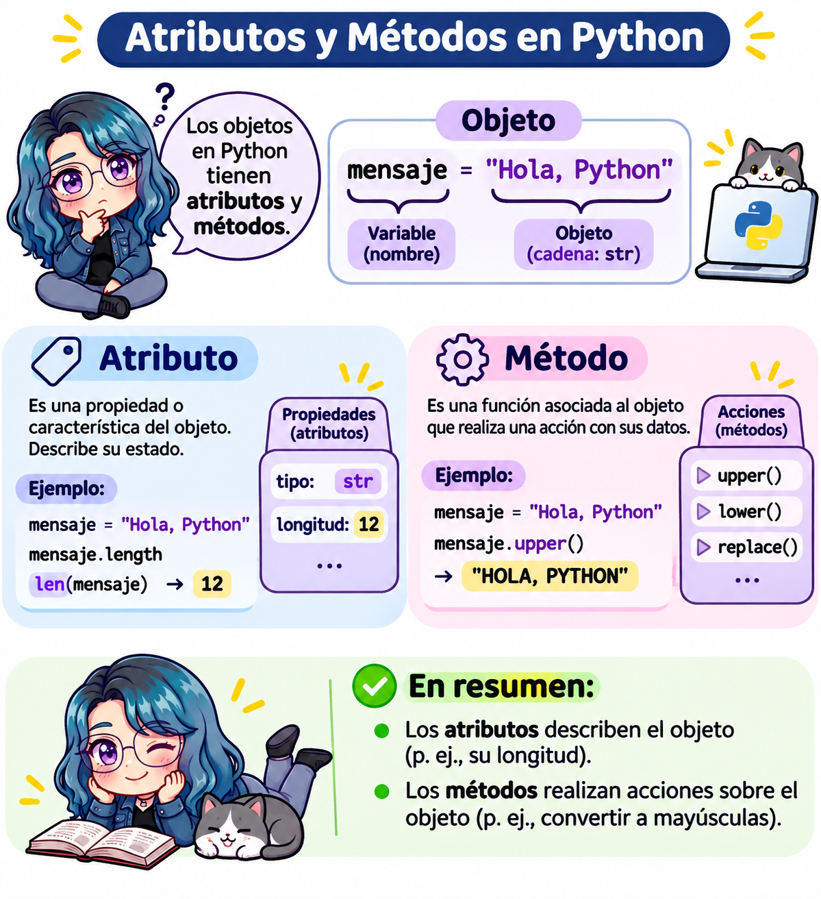

53 🐍 Actividad 2: atributos y métodos de los objetos
Fecha: 03 de noviembre, 2026
Objetivo: Utilizar los atributos y métodos de los objetos de Python (cadenas, listas, tuplas, conjuntos y diccionarios) y comprender cómo se comportan los métodos en objetos mutables e inmutables.
Nivel: Básico a intermedio.
Instrucciones: Resuelve cada ejercicio completando su código. Antes de ejecutar cada programa, analiza qué resultado esperas obtener. Completa los espacios ______; en algunos ejercicios se revisa tu respuesta automáticamente.
53.1 ¿Cómo usar los editores de esta página?
Los editores de esta página funcionan igual que en la 🐍 Actividad 1: presiona Run Code para ejecutar el código; en algunos ejercicios, Run Code también revisa tu respuesta. Usa Show Hint para ver una pista y, después, Show Solution para ver la solución.
Importante
Lo que escribas en los editores no se guarda al recargar la página. Si quieres conservar tu código, usa las opciones B, C o D de la siguiente sección.
Usa este editor libre para probar los ejemplos del recordatorio:
53.2 ¿Dónde hacer esta actividad?
Puedes resolver la actividad de cuatro formas. El contenido y los ejercicios son los mismos; elige la que prefieras. También encontrarás los enlaces a cada opción en la barra de la derecha, en Haz esta actividad en…
| A: en este libro | B: en Google Colab | C: en Jupyter Notebook | D: en RStudio (tu .qmd) |
|
|---|---|---|---|---|
| ¿Dónde se ejecuta? | En tu navegador, en esta página. | En una computadora de Google. | En tu computadora. | En tu computadora. |
| ¿Qué necesitas? | Nada, solo el navegador. | Una cuenta de Google. | El entorno quarto-python con Jupyter. |
RStudio y el entorno quarto-python configurado. |
| Archivo | Ninguno. | actividad2.ipynb (en tu Drive). |
actividad2.ipynb |
actividad2.qmd |
| ¿Se guarda tu trabajo? | No: se pierde al recargar la página. | Sí, si guardas una copia en tu Drive. | Sí, en tu computadora. | Sí, en tu computadora (y puedes subirlo a GitHub). |
| ¿Necesita internet? | Solo para cargar la página. | Sí, siempre. | No. | No. |
| Revisión de respuestas | Automática, con Run Code. | Celdas ✅ Verificar. | Celdas ✅ Verificar. | Bloques ✅ Verificar. |
| Resultado final | — | Notebook en Drive. | Notebook .ipynb. |
Documento HTML con Render. |
53.2.1 Opción A. En este libro
Usa los editores interactivos de esta página, como se explica en la sección anterior, ¿Cómo usar los editores de esta página?. Es la opción más rápida, pero tu código no se guarda: si quieres conservarlo, cópialo en otro lugar antes de cerrar la página.
53.2.2 Opción B. En Google Colab

- Da clic en el botón Open in Colab e inicia sesión con tu cuenta de Google.
- Guarda tu propia copia: Archivo > Guardar una copia en Drive. ¡No te saltes este paso! Si trabajas sin guardar una copia, tus cambios se perderán.
- Ejecuta las celdas en orden, de arriba hacia abajo, con el botón ▶ o con
Shift + Enter. - Completa los espacios
______de cada ejercicio y ejecuta la celda.
¿Qué cambia respecto al libro?
| En el libro (Opción A) | En Google Colab (Opción B) |
|---|---|
| Editores con el botón Run Code. | Celdas de código con el botón ▶ (o Shift + Enter). |
| Botones Show Hint y Show Solution. | Bloques 💡 Pista y ✔️ Solución: da clic sobre ellos para desplegarlos. |
| Run Code revisa tu respuesta automáticamente. | Ejecuta tu solución y después la celda ✅ Verificar el ejercicio… |
| Start Over regresa al código inicial. | No existe: si borras algo, consúltalo en el libro o vuelve a abrir el enlace original. |
| Cada editor es independiente. | Todas las celdas comparten las mismas variables: ejecútalas en orden. |
| El código se pierde al recargar la página. | El código se guarda en tu copia de Drive. |
Nota
En los ejercicios con verificación, la última línea de tu código guarda el resultado en la variable respuesta (por ejemplo, respuesta = porcentaje). No borres esa línea: la celda ✅ Verificar revisa esa variable. Si la sesión se desconecta, usa Entorno de ejecución > Ejecutar todas.
53.2.3 Opción C. En Jupyter Notebook (en tu computadora)
Descarga el notebook: 📥 actividad2.ipynb. También puedes verlo en GitHub.
Mueve el archivo a la carpeta donde guardas tus trabajos del curso.
Abre la Terminal, activa tu entorno y abre Jupyter Notebook:
source ~/.venvs/quarto-python/bin/activate jupyter notebooksource ~/.venvs/quarto-python/Scripts/activate jupyter notebookSe abrirá el navegador. Navega hasta la carpeta del archivo y da doble clic en
actividad2.ipynb.Ejecuta las celdas en orden con
Shift + Enter. Tu trabajo se guarda conCtrl/Cmd + S.
Las diferencias con el libro son las mismas que en Google Colab (tabla de la opción B). Además:
- La celda ✅ Verificar muestra su código (en Colab aparece oculto); no necesitas leerlo, solo ejecutarlo.
- No cierres la Terminal mientras usas Jupyter: es el programa que ejecuta tu código. Para terminar, guarda el notebook y presiona
Ctrl + Cen la Terminal. - Si
jupyter: command not found, activa el entorno (paso 3) o consulta el capítulo Configuraciones para usar Quarto con Python.
53.2.4 Opción D. En RStudio, con tu propio archivo .qmd
Esta opción te da tu propio documento de Quarto con toda la actividad: escribes tus respuestas en él, lo guardas en tu carpeta del curso y, al final, lo conviertes en un documento HTML con Render. Es la mejor opción si quieres entregar tu actividad o guardarla en tu repositorio de GitHub.
Requisito: haber configurado tu entorno en el capítulo Configuraciones para usar Quarto con Python (pasos 1 a 6).
Descarga el archivo: 📥 actividad2.qmd.
Muévelo a la carpeta de tu proyecto de RStudio del curso y ábrelo con File > Open File…
En el encabezado (YAML), cambia
Tu nombrepor tu nombre:--- title: "🐍 Actividad 2: atributos y métodos de los objetos" author: "Tu nombre" format: html jupyter: python3 execute: error: true # Muestra los errores sin detener el documento ---Ejecuta los bloques en orden con el botón ▶ de cada bloque (o
Cmd/Ctrl + Shift + Enter). El resultado aparece debajo de cada bloque.Completa los espacios
______y ejecuta los bloques ✅ Verificar después de tu solución.Guarda tus cambios (
Cmd/Ctrl + S) y, al terminar, presiona Render para generaractividad2.htmlcon todas tus respuestas y resultados.
| Elemento del YAML | ¿Para qué sirve? |
|---|---|
jupyter: python3 |
Usa el motor Jupyter con el Python de QUARTO_PYTHON al presionar Render. |
execute: error: true |
Si un bloque tiene un error (por ejemplo, un ______ sin completar), el documento sí se genera y muestra el error en lugar de detenerse. |
Tip¿Y si quiero empezar mi propio
.qmd desde cero?
También puedes crear un documento nuevo con File > New File > Quarto Document…, poner el YAML de arriba y copiar ahí los ejercicios que quieras. Así practicas lo que aprendiste en el Paso 7 del capítulo de configuración.
Advertencia
Si al ejecutar un bloque aparece ModuleNotFoundError o NameError: name '______' is not defined:
NameErrorcon______significa que todavía no completaste ese espacio: es normal.ModuleNotFoundErrorindica un problema de configuración: consulta la solución de problemas del capítulo de configuración.
53.3 Recordatorio: ¿cómo se usa un objeto?
En Python accedemos a los atributos y métodos de un objeto con un punto (.):
objeto.atributo # Atributo: información del objeto (sin paréntesis)
objeto.metodo() # Método: una acción que realiza el objeto (con paréntesis)La diferencia principal:
| Atributo | Método | |
|---|---|---|
| ¿Qué es? | Un dato guardado en el objeto. | Una función que pertenece al objeto. |
| ¿Lleva paréntesis? | No: objeto.atributo |
Sí: objeto.metodo() |
| Ejemplo | numero.real |
saludo.upper() |

53.3.1 Atributos de los números: real e imag
Un número complejo tiene una parte real y una parte imaginaria: \(a + bi\). En Python la unidad imaginaria se escribe con j, por ejemplo 3 + 4j.
Los números en Python tienen dos atributos:
| Atributo | ¿Qué contiene? | Ejemplo con 3 + 4j |
|---|---|---|
real |
La parte real del número. | 3.0 |
imag |
La parte imaginaria del número (sin la j). |
4.0 |
Código
numero = 3 + 4j # Número complejo
print(numero.real) # Atributo: parte real3.0Código
print(numero.imag) # Atributo: parte imaginaria4.0Código
print(type(numero.real)) # Ambas partes se guardan como float<class 'float'>Los enteros (int) y los decimales (float) también tienen estos atributos. Su parte imaginaria es 0:
Código
edad = 20
print(edad.real)20Código
print(edad.imag)0Compara con un método del mismo objeto. conjugate() regresa el conjugado del número (\(3 - 4i\)), y por ser método lleva paréntesis:
Código
print(numero.conjugate())(3-4j)Código
saludo = "hola"
print(saludo.upper()) # Método de las cadenasHOLASi escribes paréntesis en un atributo, Python marca un error, porque un atributo es un dato y no una función que se pueda llamar:
Código
numero.real()TypeError: 'float' object is not callable53.3.2 dir(): ¿qué atributos y métodos tiene un objeto?
La función dir() regresa una lista con los nombres de todos los atributos y métodos de un objeto:
Código
print(dir(numero))['__abs__', '__add__', '__bool__', '__class__', '__complex__', '__delattr__', '__dir__', '__doc__', '__eq__', '__format__', '__ge__', '__getattribute__', '__getnewargs__', '__getstate__', '__gt__', '__hash__', '__init__', '__init_subclass__', '__le__', '__lt__', '__mul__', '__ne__', '__neg__', '__new__', '__pos__', '__pow__', '__radd__', '__reduce__', '__reduce_ex__', '__repr__', '__rmul__', '__rpow__', '__rsub__', '__rtruediv__', '__setattr__', '__sizeof__', '__str__', '__sub__', '__subclasshook__', '__truediv__', 'conjugate', 'imag', 'real']Los nombres que empiezan y terminan con doble guion bajo, como __add__, son métodos especiales que Python usa internamente (por ejemplo, __add__ se ejecuta cuando usamos +). Por ahora podemos ignorarlos y mostrar solo los demás (no te preocupes por la sintaxis de esta línea: la entenderás en el capítulo de ciclos for):
Código
print([nombre for nombre in dir(numero) if not nombre.startswith("_")])['conjugate', 'imag', 'real']Ahí aparecen real e imag (atributos) y conjugate (método). Hagamos lo mismo con una cadena de texto:
Código
print([nombre for nombre in dir("hola") if not nombre.startswith("_")])['capitalize', 'casefold', 'center', 'count', 'encode', 'endswith', 'expandtabs', 'find', 'format', 'format_map', 'index', 'isalnum', 'isalpha', 'isascii', 'isdecimal', 'isdigit', 'isidentifier', 'islower', 'isnumeric', 'isprintable', 'isspace', 'istitle', 'isupper', 'join', 'ljust', 'lower', 'lstrip', 'maketrans', 'partition', 'removeprefix', 'removesuffix', 'replace', 'rfind', 'rindex', 'rjust', 'rpartition', 'rsplit', 'rstrip', 'split', 'splitlines', 'startswith', 'strip', 'swapcase', 'title', 'translate', 'upper', 'zfill']
Tip
dir() no indica cuál nombre es atributo y cuál es método. Para saberlo, consulta su documentación con help().
53.3.3 help(): ¿cómo se usa un atributo o método?
La función help() muestra la documentación de un objeto, una función o un método: qué hace, qué argumentos recibe y qué regresa.
Código
help(str.upper)Help on method_descriptor:
upper(self, /) unbound builtins.str method
Return a copy of the string converted to uppercase.Código
help(str.replace)Help on method_descriptor:
replace(self, old, new, count=-1, /) unbound builtins.str method
Return a copy with all occurrences of substring old replaced by new.
count
Maximum number of occurrences to replace.
-1 (the default value) means replace all occurrences.
If the optional argument count is given, only the first count occurrences are
replaced.Para consultar un método escribimos el tipo, un punto y el nombre del método sin paréntesis: help(str.replace), no help(str.replace()). También funciona con un objeto: help(saludo.upper).
| Función | ¿Qué hace? | Ejemplo |
|---|---|---|
type() |
Indica el tipo del objeto. | type(numero) |
dir() |
Lista los nombres de sus atributos y métodos. | dir(numero) |
help() |
Muestra la documentación de un objeto o método. | help(str.upper) |
Nota
Si ejecutas help(str) en la consola, la documentación es muy larga y se muestra por páginas. Avanza con la barra espaciadora y sal con la tecla q. En Jupyter, Colab y Quarto se muestra completa debajo de la celda.
53.3.4 Funciones integradas y atributos más usados
Además de los métodos, Python tiene funciones integradas (built-in functions), como len(). Estas funciones no se escriben con punto: el objeto va dentro de los paréntesis.
| Función integrada | Método | Atributo | |
|---|---|---|---|
| ¿Cómo se escribe? | funcion(objeto) |
objeto.metodo() |
objeto.atributo |
| Ejemplo | len(lista) |
lista.count(3) |
numero.real |
| ¿Funciona con…? | Muchos tipos de objetos. | Solo con el tipo al que pertenece. | Solo con el tipo al que pertenece. |
Por eso escribimos len(lista) y no lista.len().
Funciones integradas más usadas
| Función | ¿Qué hace? | Ejemplo | Resultado |
|---|---|---|---|
print() |
Muestra uno o más valores. | print("Hola", 5) |
Hola 5 |
type() |
Regresa el tipo del objeto. | type(3.5) |
<class 'float'> |
id() |
Regresa la identidad del objeto. | id(x) |
4371203472 |
len() |
Regresa el número de elementos. | len([4, 7, 1]) |
3 |
sum() |
Suma los elementos. | sum([4, 7, 1]) |
12 |
min(), max() |
Regresan el menor o el mayor elemento. | max([4, 7, 1]) |
7 |
abs() |
Valor absoluto. | abs(-8) |
8 |
round() |
Redondea a cierto número de decimales. | round(3.14159, 2) |
3.14 |
pow() |
Potencia (igual que **). |
pow(2, 10) |
1024 |
divmod() |
Cociente y residuo de una división entera. | divmod(17, 5) |
(3, 2) |
sorted() |
Regresa una lista nueva ordenada. | sorted([4, 7, 1]) |
[1, 4, 7] |
range() |
Genera una secuencia de enteros. | list(range(1, 6)) |
[1, 2, 3, 4, 5] |
int(), float(), str() |
Convierten a entero, decimal o texto. | int("42") |
42 |
list(), tuple(), set() |
Convierten a lista, tupla o conjunto. | set([1, 1, 2]) |
{1, 2} |
isinstance() |
Indica si un objeto es de cierto tipo. | isinstance(5, int) |
True |
dir() |
Lista los atributos y métodos de un objeto. | dir(5) |
['__abs__', ...] |
help() |
Muestra la documentación. | help(len) |
(documentación) |
Pruébalas: modifica la lista y presiona Run Code.
Advertencia
Si escribes una función integrada como si fuera un método, obtendrás un error: numeros.len() produce AttributeError: 'list' object has no attribute 'len'.
Atributos más usados
Los atributos son menos comunes que los métodos en los tipos básicos de Python. Estos son los que más usarás:
| Tipo de objeto | Atributo | ¿Qué contiene? | Ejemplo | Resultado |
|---|---|---|---|---|
int, float, complex |
real |
Parte real del número. | (3 + 4j).real |
3.0 |
int, float, complex |
imag |
Parte imaginaria del número. | (3 + 4j).imag |
4.0 |
int |
numerator |
Numerador (el propio entero). | (7).numerator |
7 |
int |
denominator |
Denominador (siempre 1). |
(7).denominator |
1 |
range |
start, stop, step |
Inicio, fin y paso del rango. | range(0, 10, 2).step |
2 |
| Cualquier objeto | __class__ |
El tipo del objeto (igual que type()). |
"hola".__class__ |
<class 'str'> |
| Cualquier objeto | __doc__ |
El texto de su documentación. | len.__doc__ |
'Return the number of items...' |
Nota
Para usar un atributo directamente sobre un número entero escribe el número entre paréntesis: (7).numerator. Si escribes 7.numerator, Python cree que el punto es el punto decimal y marca un SyntaxError.
Cuando trabajes con bibliotecas como NumPy y pandas, los atributos serán muy frecuentes:
| Biblioteca | Atributo | ¿Qué contiene? |
|---|---|---|
NumPy (array) |
shape |
Dimensiones del arreglo, por ejemplo (3, 4). |
NumPy (array) |
ndim |
Número de dimensiones. |
NumPy (array) |
size |
Número total de elementos. |
NumPy (array) |
dtype |
Tipo de dato de los elementos. |
NumPy (array) |
T |
La matriz transpuesta. |
pandas (DataFrame) |
shape |
Número de filas y columnas. |
pandas (DataFrame) |
columns |
Nombres de las columnas. |
pandas (DataFrame) |
dtypes |
Tipo de dato de cada columna. |
53.3.5 Principales métodos
| Tipo | Método | ¿Qué hace? | ¿Modifica el objeto? |
|---|---|---|---|
str |
upper(), lower() |
Convierte a mayúsculas / minúsculas. | No, regresa una nueva cadena. |
str |
replace(a, b) |
Reemplaza a por b. |
No, regresa una nueva cadena. |
str |
count(x) |
Cuenta cuántas veces aparece x. |
No |
str |
split(sep) |
Separa la cadena en una lista. | No |
str |
strip() |
Elimina espacios al inicio y al final. | No |
list |
append(x) |
Agrega x al final. |
Sí |
list |
extend(lista) |
Agrega varios elementos al final. | Sí |
list |
insert(i, x) |
Inserta x en la posición i. |
Sí |
list |
remove(x) |
Elimina la primera aparición de x. |
Sí |
list |
pop() |
Elimina y regresa el último elemento. | Sí |
list |
sort(), reverse() |
Ordena / invierte la lista. | Sí |
tuple |
count(x), index(x) |
Cuenta / busca la posición de x. |
No |
set |
add(x) |
Agrega x al conjunto. |
Sí |
set |
union(), intersection(), difference() |
Operaciones de conjuntos. | No, regresan un nuevo conjunto. |
dict |
keys(), values(), items() |
Regresan las claves, valores o pares. | No |
dict |
get(clave) |
Regresa el valor de una clave (o None si no existe). |
No |
dict |
update(dicc) |
Agrega o actualiza pares clave-valor. | Sí |
dict |
pop(clave) |
Elimina una clave y regresa su valor. | Sí |
Observa el patrón: los métodos de los objetos inmutables (str, tuple) nunca modifican el objeto original, siempre regresan un objeto nuevo.
53.4 Parte I. Cadenas de texto (str)
53.4.1 Ejercicio 1. Transformar un nombre
Dada la variable nombre, muestra:
- El nombre en mayúsculas.
- El nombre en minúsculas.
- El nombre sin los espacios al inicio y al final.
- La variable
nombreoriginal. ¿Cambió?
NotaPista
Usa los métodos upper(), lower() y strip(). Recuerda escribir el punto y los paréntesis: nombre.upper().
TipSolución
nombre = " Ana María López "
print(nombre.upper())
print(nombre.lower())
print(nombre.strip())
print(nombre) # No cambió: las cadenas son inmutablesCada método regresa una cadena nueva; la original no cambia porque las cadenas son inmutables.
53.4.2 Ejercicio 2. Los dígitos de \(\pi\)
La variable pi guarda las primeras cifras de \(\pi\) como texto:
- Quita el punto decimal con
replace()y guarda el resultado endigitos. Muestra cuántos dígitos son conlen(). - Cuenta cuántas veces aparecen los dígitos
"3","5"y"9"con el métodocount(). - Calcula el porcentaje de dígitos impares (
1,3,5,7y9):
\[\% \text{impares} = \frac{\text{número de dígitos impares}}{\text{total de dígitos}} \times 100\]
Deja el resultado en la última línea para que se revise tu respuesta.
NotaPista
pi.replace(".", "") reemplaza el punto por una cadena vacía, es decir, lo elimina. digitos.count("3") regresa cuántos 3 hay. Para los impares suma cinco conteos: digitos.count("1") + digitos.count("3") + ...
TipSolución
pi = "3.1415926535897932384"
digitos = pi.replace(".", "")
print("Dígitos:", digitos, "Total:", len(digitos)) # Total: 20
print("3:", digitos.count("3")) # 4
print("5:", digitos.count("5")) # 3
print("9:", digitos.count("9")) # 3
impares = (digitos.count("1") + digitos.count("3") + digitos.count("5")
+ digitos.count("7") + digitos.count("9"))
porcentaje = impares / len(digitos) * 100
porcentaje # 65.0Observa que count() funciona porque pi es una cadena de texto (str). Si pi fuera un número (float), no tendría los métodos replace() ni count().
53.4.3 Ejercicio 3. Separar y unir texto
Separa la siguiente cadena en una lista de frutas con split() y después vuelve a unirlas en una sola cadena, separadas por " | ", con el método join().
NotaPista
split(",") separa la cadena cada vez que encuentra una coma. join() se escribe al revés de lo que esperarías: primero el separador y luego la lista, " | ".join(lista).
TipSolución
frutas = "manzana,pera,uva,mango"
lista_frutas = frutas.split(",")
print(lista_frutas)
print(type(lista_frutas))
unidas = " | ".join(lista_frutas)
print(unidas)Observa que split() convierte una cadena (str) en una lista (list), y join() hace lo contrario.
53.5 Parte II. Listas (list)
53.5.1 Ejercicio 4. Mi lista de compras
A partir de la lista compras:
- Agrega
"café"al final conappend(). - Agrega
"pan"y"queso"conextend(). - Inserta
"agua"en la primera posición coninsert(). - Elimina
"leche"conremove(). - Elimina el último elemento con
pop()y guárdalo en la variableultimo. - Muestra la lista final, el elemento eliminado y el número de elementos con
len().
NotaPista
extend() recibe una lista: compras.extend(["pan", "queso"]). insert() recibe la posición y el elemento: compras.insert(0, "agua").
TipSolución
compras = ["huevos", "leche", "tortillas"]
compras.append("café")
compras.extend(["pan", "queso"])
compras.insert(0, "agua")
compras.remove("leche")
ultimo = compras.pop()
print(compras)
print("Elemento eliminado:", ultimo)
print("Número de elementos:", len(compras))53.5.2 Ejercicio 5. Ordenar calificaciones
- Ordena las calificaciones de menor a mayor con
sort(). - Ordénalas de mayor a menor con
sort(reverse=True). - ¿Cuántas veces aparece el
10? Usacount(). - Con la lista ordenada de mayor a menor, ¿en qué posición está el primer
6? Usaindex()y deja el resultado en la última línea.
NotaPista
sort() no regresa nada, solo modifica la lista: escribe calificaciones.sort() en su propia línea. Para la posición: calificaciones.index(6).
TipSolución
calificaciones = [8, 10, 6, 9, 10, 7, 6]
calificaciones.sort()
print(calificaciones)
calificaciones.sort(reverse=True)
print(calificaciones)
print("Veces que aparece el 10:", calificaciones.count(10))
calificaciones.index(6) # 553.5.3 Ejercicio 6. ¿Por qué obtengo None?
Ejecuta el código y responde:
- ¿Qué valor tiene
ordenada? - ¿Qué valor tiene
numeros? - ¿Cómo lo corregirías para que
ordenadatenga la lista ordenada sin modificarnumeros?
NotaPista
Los métodos que modifican una lista, como sort(), regresan None. Existe una función llamada sorted() que regresa una lista nueva.
TipSolución
El método sort() modifica la lista original (las listas son mutables) y no regresa nada, es decir, regresa None. Para obtener una lista nueva ordenada sin modificar la original utilizamos la función sorted():
numeros = [5, 2, 9, 1]
ordenada = sorted(numeros)
print("ordenada:", ordenada) # [1, 2, 5, 9]
print("numeros:", numeros) # [5, 2, 9, 1]53.5.4 Ejercicio 7. Copia vs. referencia
Ejecuta el código. ¿Por qué cambió también lista_a? Compruébalo comparando las identidades con id() y después corrígelo con el método copy(), para que lista_a no cambie.
NotaPista
Cambia la segunda línea por lista_b = lista_a.copy().
TipSolución
lista_b = lista_a no crea una lista nueva: ambas variables hacen referencia al mismo objeto. Con copy() creamos un objeto nuevo:
lista_a = [1, 2, 3]
lista_b = lista_a.copy()
lista_b.append(4)
print("lista_a:", lista_a) # [1, 2, 3]
print("lista_b:", lista_b) # [1, 2, 3, 4]
print("¿Mismo objeto?", id(lista_a) == id(lista_b)) # False53.6 Parte III. Tuplas (tuple) y conjuntos (set)
53.6.1 Ejercicio 8. Métodos de una tupla
Las tuplas son inmutables, por lo que solo tienen dos métodos: count() e index().
- Cuenta cuántas veces aparece
"rojo". - Encuentra la posición de
"azul". - Ejecuta la última línea, que intenta agregar un color con
append(). ¿Qué error obtienes y por qué?
NotaPista
colores.count("rojo") y colores.index("azul"). Usa dir(colores) para ver qué métodos tiene una tupla.
TipSolución
colores = ("rojo", "verde", "azul", "rojo", "amarillo")
print("Veces que aparece rojo:", colores.count("rojo")) # 2
print("Posición de azul:", colores.index("azul")) # 2
colores.append("negro") # AttributeErrorObtenemos un AttributeError: 'tuple' object has no attribute 'append': las tuplas no tienen el método append() porque son inmutables.
53.6.2 Ejercicio 9. Divisores comunes y máximo común divisor
Los conjuntos divisores_12 y divisores_18 deberían contener todos los divisores de 12 y de 18, pero a uno le falta un elemento:
- Agrega el divisor que le falta a
divisores_12conadd(). - Obtén todos los números que dividen a 12 o a 18 con
union(). - Obtén los divisores de 12 que no dividen a 18 con
difference(). - Obtén los divisores comunes con
intersection(). - En la última línea, calcula el máximo común divisor (MCD) de 12 y 18 aplicando la función
max()a los divisores comunes.
NotaPista
12 = 2 × 6, así que el 6 divide a 12. divisores_12.add(6) modifica el conjunto; divisores_12.intersection(divisores_18) regresa un conjunto nuevo. max() es una función y no un método: max(comunes).
TipSolución
divisores_12 = {1, 2, 3, 4, 12}
divisores_18 = {1, 2, 3, 6, 9, 18}
divisores_12.add(6)
print("Dividen a 12 o a 18:", divisores_12.union(divisores_18))
print("Dividen a 12 pero no a 18:", divisores_12.difference(divisores_18)) # {4, 12}
comunes = divisores_12.intersection(divisores_18)
print("Divisores comunes:", comunes) # {1, 2, 3, 6}
max(comunes) # 6Recuerda que los conjuntos no tienen orden, por lo que los elementos pueden aparecer en un orden distinto.
53.7 Parte IV. Diccionarios (dict)
53.7.1 Ejercicio 10. Ficha de un estudiante
A partir del diccionario estudiante:
- Muestra sus claves con
keys()y sus valores convalues(). - Obtén la carrera con
get(). ¿Qué pasa si pides una clave que no existe, como"telefono"? - Agrega el semestre (
1) y actualiza la edad a20conupdate(). - Elimina la clave
"correo"conpop(). - Muestra los pares clave-valor con
items().
NotaPista
update() recibe otro diccionario: estudiante.update({"semestre": 1, "edad": 20}). pop() recibe la clave que quieres eliminar.
TipSolución
estudiante = {
"nombre": "Ana",
"edad": 19,
"carrera": "Matemáticas para el Desarrollo",
"correo": "ana@ejemplo.com"
}
print(estudiante.keys())
print(estudiante.values())
print(estudiante.get("carrera"))
print(estudiante.get("telefono")) # Regresa None en lugar de un error
estudiante.update({"semestre": 1, "edad": 20})
correo = estudiante.pop("correo")
print(estudiante.items())53.8 Reto final: estadística sin ciclos
Con los métodos y las funciones integradas que conoces, calcula las principales medidas estadísticas de la lista datos, sin modificar la lista original:
- Media: la suma de los datos entre el número de datos, redondeada a 2 decimales.
- Mediana: el dato que queda en medio cuando la lista está ordenada (la lista tiene 9 datos, así que es el que está en el índice 4).
- Moda: el dato que más se repite.
- Rango: la diferencia entre el dato mayor y el menor.
- Guarda los resultados en el diccionario
resumeny déjalo en la última línea.
NotaPista
- Media:
round(sum(datos) / len(datos), 2). - Mediana:
sorted(datos)regresa una lista nueva ordenada; el elemento de en medio está en el índicelen(ordenados) // 2(el operador//divide y descarta los decimales). - Moda:
max()acepta el argumentokey, que indica qué comparar.max(set(datos), key=datos.count)busca, entre los valores únicos, el que tiene el mayordatos.count(...). - Rango: usa
max()ymin().
TipSolución
datos = [12, 7, 3, 7, 25, 12, 7, 9, 18]
media = round(sum(datos) / len(datos), 2)
ordenados = sorted(datos)
mediana = ordenados[len(ordenados) // 2]
moda = max(set(datos), key=datos.count)
rango = max(datos) - min(datos)
print("Datos originales:", datos)
print("Datos ordenados:", ordenados)
resumen = {"media": media, "mediana": mediana, "moda": moda, "rango": rango}
resumen # {'media': 11.11, 'mediana': 9, 'moda': 7, 'rango': 22}Si hubieras usado datos.sort(), la lista original se habría modificado (las listas son mutables). sorted() es una función que regresa un objeto nuevo y deja intacto el original.
53.9 Referencias
- Sección 4 Python: Tipos de datos
- Documentación de Python: Estructuras de datos
- Documentación de Python: Métodos de las cadenas